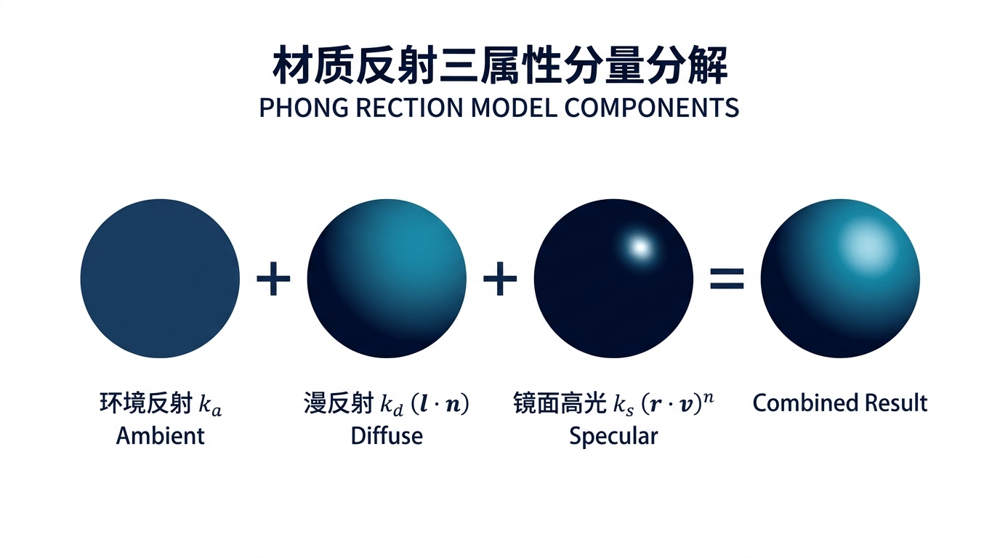
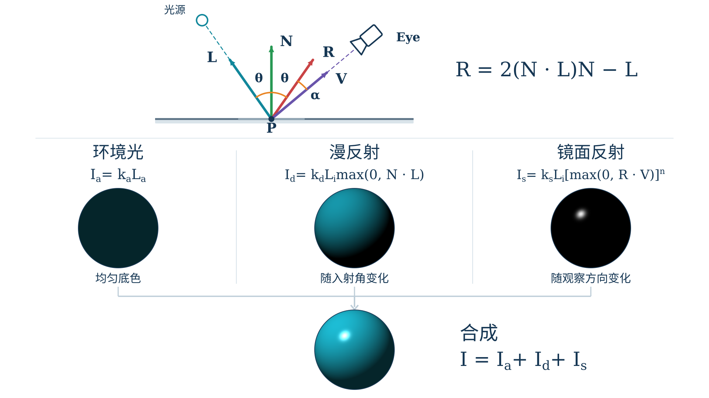
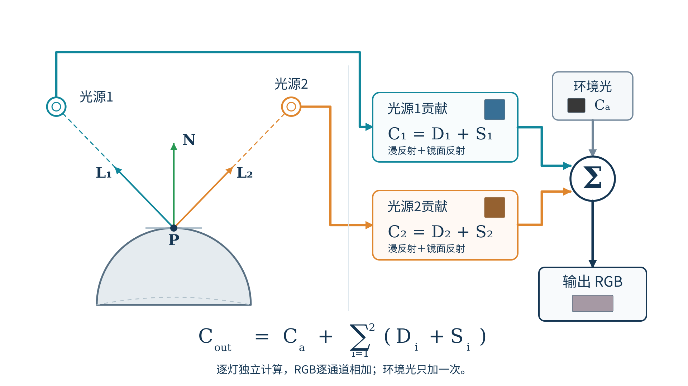
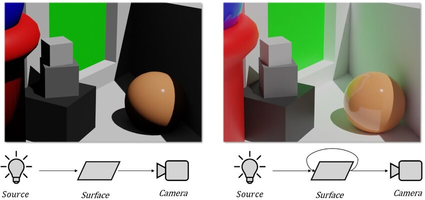
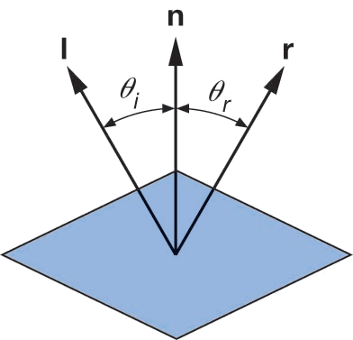
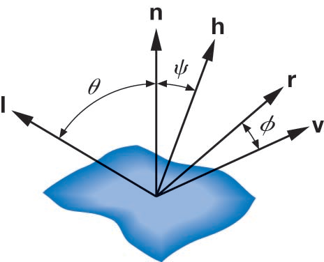
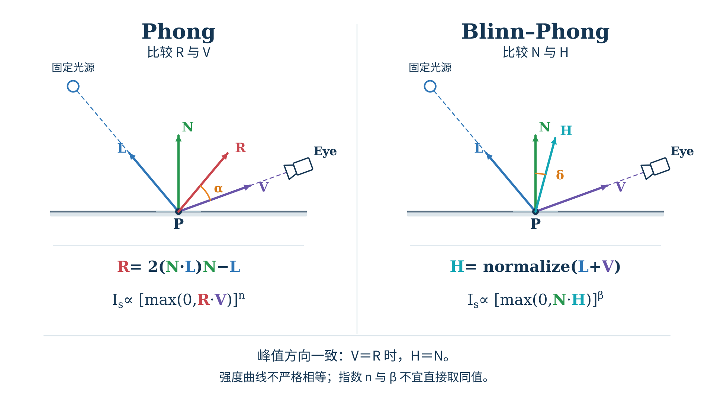
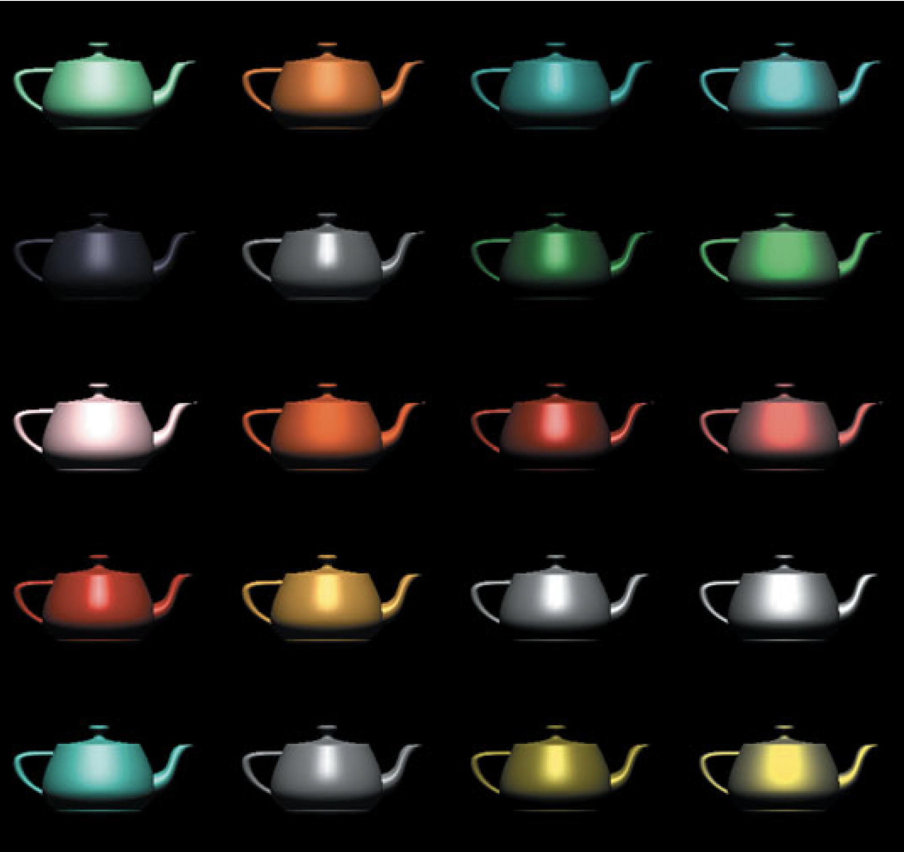
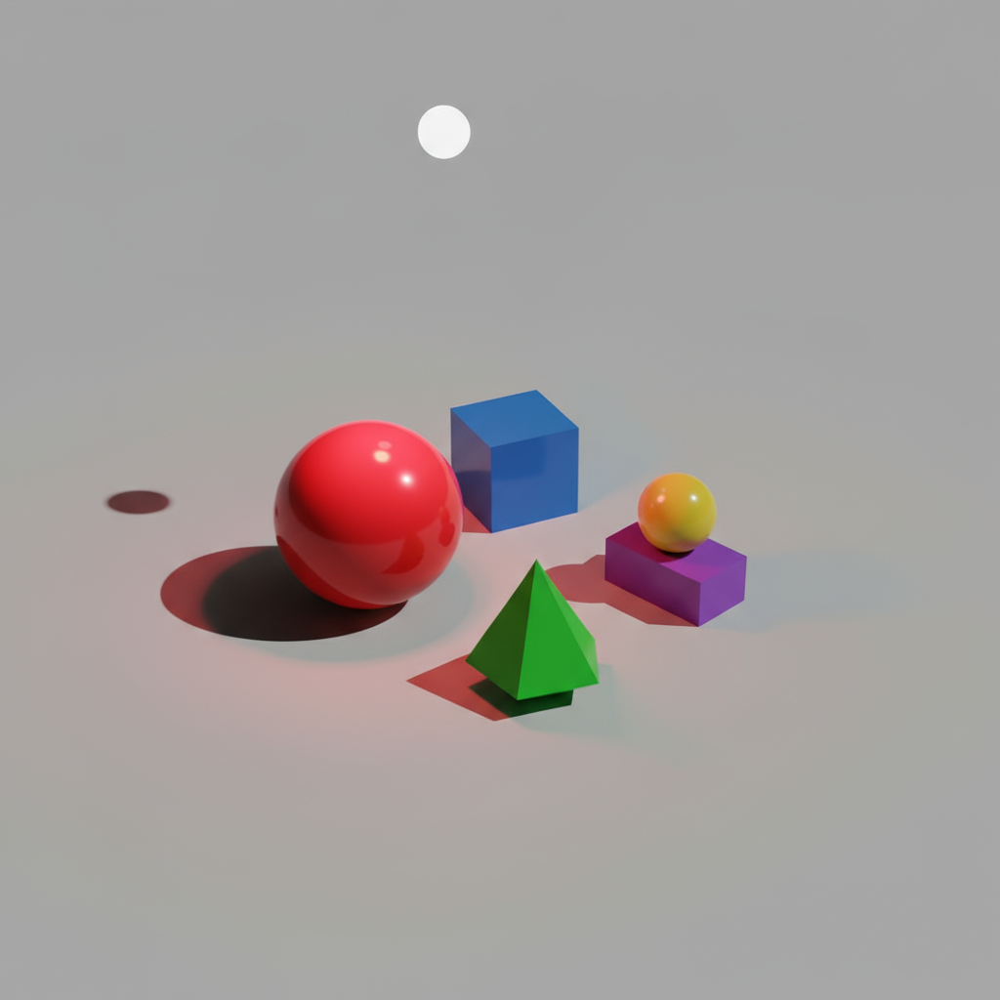

从分量叠加到半角优化，构建工业级经典着色模型
前两节课我们掌握了环境底色 \(I_a\)、漫反射 \(I_d\) 与镜面反射 \(I_s\)。物体表面的最终颜色由谁主导？

模拟房间内漫射散射光；无论朝向如何，为暗部提供保底明度，消除死黑。
由法线与光线点乘决定；刻画平缓的阴阳明暗过渡，呈现固有色与立体形体。
由反射角与视线点乘主导；沿反射锥集中出射，呈现高光耀斑与光滑质感。
在相同模型、相同视角下，把三项反射分量分别展示，再展示逐项合成后的效果。

真实场景中往往存在多个主灯、补光灯与环境光，整体出射光强满足线性叠加：
全局环境光通常在着色器中只计入一次，代表整个环境空间的基底漫射。
每个点光源或方向光分别计算自己的入射向量 \(\mathbf{l}_m\) 与反射向量 \(\mathbf{r}_m\)，加权累加后输出。
固定一个表面点 P：蓝灯与暖灯分别产生自己的 L、R 和 RGB 贡献，结果由着色器加总。

① 纯局部代数计算，没有任何跨三角形的射线追踪，耗时极低；
②
片元着色器天然并行计算，能轻松跑满 144Hz 实时帧率；
③
参数直观，非常易于艺术家和程序员直观调节。
① 不守恒：\(k_a+k_d+k_s\)
随意调大可能导致反射能量超过入射能量；
②
无阴影：被其他物体挡住的光线依然会照亮表面（需额外 Shadow
Map）；
③
无菲涅尔效应：掠射角反光急剧增强的物理现象无法自然呈现。
Phong 可以计算光源到当前表面的直接贡献，却不会自动生成光在表面之间反弹造成的间接照明。

为什么 Jim Blinn 在 1977 年提出了对 Phong 模型的重大改良？
求反射向量 \(\hat{\mathbf{r}} = 2(\hat{\mathbf{n}}\cdot\hat{\mathbf{l}})\hat{\mathbf{n}} - \hat{\mathbf{l}}\) 需要在每个片元执行一次点积、一次标量与向量乘法、一次向量减法。在早期 GPU 和移动设备上极其昂贵。
当视线 \(\mathbf{v}\) 与反射向量 \(\mathbf{r}\) 夹角大于 90° 时，点积直接截断为 0；在粗糙材质的大高光区域边缘，容易出现不自然的高光生硬切边。
依据理想反射定律与向量投影，推导传统 Phong 镜面反射向量 \(\hat{\mathbf{r}}\) 的标准代数表达式：

单位入射向量 \(\hat{\mathbf{l}}\) 在法线 \(\hat{\mathbf{n}}\) 上的标量正投影为 \(\cos\theta = \hat{\mathbf{n}}\cdot\hat{\mathbf{l}}\)，沿法向分量为： \(\mathbf{l}_{\parallel} = (\hat{\mathbf{n}}\cdot\hat{\mathbf{l}})\hat{\mathbf{n}}\)
由反射定律，\(\hat{\mathbf{l}}\) 与 \(\hat{\mathbf{r}}\) 构成菱形，其连线中点恰好落在法向投影分量端点： \(\frac{\hat{\mathbf{l}} + \hat{\mathbf{r}}}{2} = (\hat{\mathbf{n}}\cdot\hat{\mathbf{l}})\hat{\mathbf{n}} \iff \hat{\mathbf{l}} + \hat{\mathbf{r}} = 2(\hat{\mathbf{n}}\cdot\hat{\mathbf{l}})\hat{\mathbf{n}}\)
移项解出 \(\hat{\mathbf{r}}\)，即得标准反射计算公式（对应着色器
reflect(-l, n)）：
\(\hat{\mathbf{r}} = 2(\hat{\mathbf{n}}\cdot\hat{\mathbf{l}})\hat{\mathbf{n}}
- \hat{\mathbf{l}}\)
将“视线对准反射线（\(\hat{\mathbf{v}}\approx\hat{\mathbf{r}}\)）”巧妙转化为“法线对准半角方向（\(\hat{\mathbf{n}}\approx\hat{\mathbf{h}}\)）”：

\(\hat{\mathbf{h}}\) 为入射光反向 \(\hat{\mathbf{l}}\) 与视线 \(\hat{\mathbf{v}}\) 的单位角平分线向量： \(\hat{\mathbf{h}} = \operatorname{normalize}(\hat{\mathbf{l}} + \hat{\mathbf{v}}) = \frac{\hat{\mathbf{l}} + \hat{\mathbf{v}}}{\|\hat{\mathbf{l}} + \hat{\mathbf{v}}\|}\) 只需 1 次加法与 1 次归一化；若视点与光源位于无穷远（平行光），\(\hat{\mathbf{h}}\) 全局恒定！
由几何对称，当微观法线与半角向量重合（\(\hat{\mathbf{n}}=\hat{\mathbf{h}}\)）时，入射角必等于反射角，入射光完美镜面反射入人眼，高光达到极大值！
用 \(\max(0, \hat{\mathbf{n}}\cdot\hat{\mathbf{h}})\) 近似度量高光：峰值方向一致且过渡平滑，彻底避免了夹角大于 90° 时的生硬切边伪影。
无需计算复杂的反射向量 \(\mathbf{r}\)；当视点与光源处于无穷远时，\(\mathbf{h}\) 在整个网格面上为常数向量！
\(\mathbf{n}\cdot\mathbf{h}\) 随视点变化平缓，避免了 90° 截断突变硬边，大高光表现更加真实自然。
通常取指数 \(\beta \approx 2n \sim 4n\) 即可匹配传统 Phong 的光斑大小。OpenGL、Direct3D 与 WebGL 均不规定默认光照模型，须由着色器实现。
两幅几何图使用同一表面、光源、相机与法线；唯一的区别是传统 Phong 测量 R·V，Blinn-Phong 测量 N·H。

固定同一个球体与器械模型及相机视角，独立调控光源与材质属性，实时观察光照分量与明暗高光响应。
通过设置不同的 \(k_a, k_d, k_s, n\) 组合，可以精确仿真现实生活中的各类质感：
固有漫反射 + 白色高光
\(k_d\)
较高（表现物体红/蓝颜色），\(k_s\) 适中且高光为白色，\(n \approx 16 \sim 64\)。
无漫反射 + 彩色镜面高光
\(k_d \approx 0\)，\(k_s\)
极高且高光带有金属自身颜色（金色/铜色），\(n \ge 128\)。
纯朗伯漫反射体
\(k_d\) 较高呈现灰白色，\(k_s \approx 0\)
完全没有高光耀斑，表面哑光柔和。
保持几何形体不变，只改变材质的漫反射色、镜面反射色和高光指数；观察从哑光到光泽的外观变化。

工业界经典标准（OpenGL Red Book）汇总的典型材质光学参数，展示金属、宝石与电介质的各分量配置：
| 典型材质 | 物理分类 | 环境反射 ka (RGB) | 漫反射 kd (RGB) | 镜面高光 ks (RGB) | 高光指数 n / β | 光学视觉特征 |
|---|---|---|---|---|---|---|
| 黄金 (Gold) | 贵金属 | (0.247, 0.200, 0.075) | (0.752, 0.606, 0.226) | (0.628, 0.556, 0.366) | n = 51.2 (β ≈ 128) | 高光带暖黄，金属反射强烈 |
| 白银 (Silver) | 贵金属 | (0.192, 0.192, 0.192) | (0.508, 0.508, 0.508) | (0.508, 0.508, 0.508) | n = 51.2 (β ≈ 128) | 全波段均匀反射，呈银白光泽 |
| 黄铜 (Brass) | 合金 | (0.329, 0.224, 0.027) | (0.780, 0.569, 0.114) | (0.992, 0.941, 0.808) | n = 27.9 (β ≈ 80) | 高光极强带浅金，光斑相对宽广 |
| 翡翠 (Emerald) | 宝石矿物 | (0.022, 0.175, 0.022) | (0.076, 0.614, 0.076) | (0.633, 0.728, 0.633) | n = 76.8 (β ≈ 200) | 翠绿漫反射基底，高光锐利晶亮 |
| 青色塑料 (Cyan Plastic) | 电介质 | (0.000, 0.100, 0.060) | (0.000, 0.510, 0.510) | (0.502, 0.502, 0.502) | n = 32.0 (β ≈ 90) | 非金属典型：高光为纯白光源色 |
| 黑色橡胶 (Black Rubber) | 哑光体 | (0.020, 0.020, 0.020) | (0.010, 0.010, 0.010) | (0.400, 0.400, 0.400) | n = 10.0 (β ≈ 25) | 反射率与指数均低，光斑弥散柔和 |
#version 300 es
// 光源属性结构体
struct Light {
vec3 position; // 世界坐标位置
vec3 ambient; // 环境光 RGB 强度
vec3 diffuse; // 漫反射 RGB 强度
vec3 specular; // 镜面高光 RGB 强度
};
// 材质属性结构体
struct Material {
vec3 ka; // 环境反射系数
vec3 kd; // 漫反射系数（固有色）
vec3 ks; // 镜面反射系数
float shininess;// Blinn-Phong 高光指数
};
uniform Light uLight;
uniform Material uMaterial;
① 单个表面的朝向与明暗变化；
② 光滑材质的高光耀斑与视点移动效应；
③
材质颜色与光源颜色的光谱乘积。
① 投射阴影：被前面茶壶挡住的桌子依然被光照亮（需 Shadow
Map）；
②
相互反射：红色墙面无法将红光漫射弹射到白色地板上；
③
透明折射：玻璃器皿内部的折射与焦散光斑。
只判断表面法线与光源方向无法得知光线是否被遮挡，也无法模拟多次反弹。

在医学解剖三维重建（如胸腔骨骼或微创手术器械）中，如何设置光照参数？
强调漫反射，抑制强高光
骨质表面具有微孔粗糙度，设置高
\(k_d\)、低 \(k_s\) 与低 \(n\)。若高光过强，反光白斑会遮挡微细骨折裂隙！
强调镜面高光，突出锋利金属轮廓
器械表面抛光精密，设置高
\(k_s\) 与高 \(n\)（128以上），借助狭窄耀斑凸显手术器械的空间走向与刃口金属感。